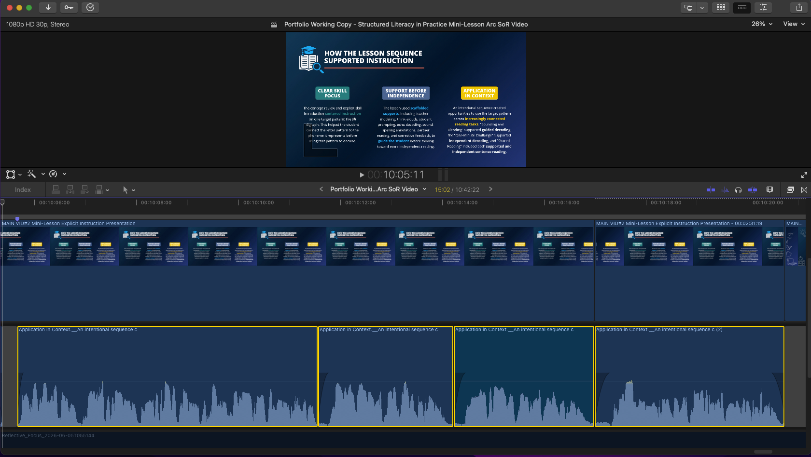
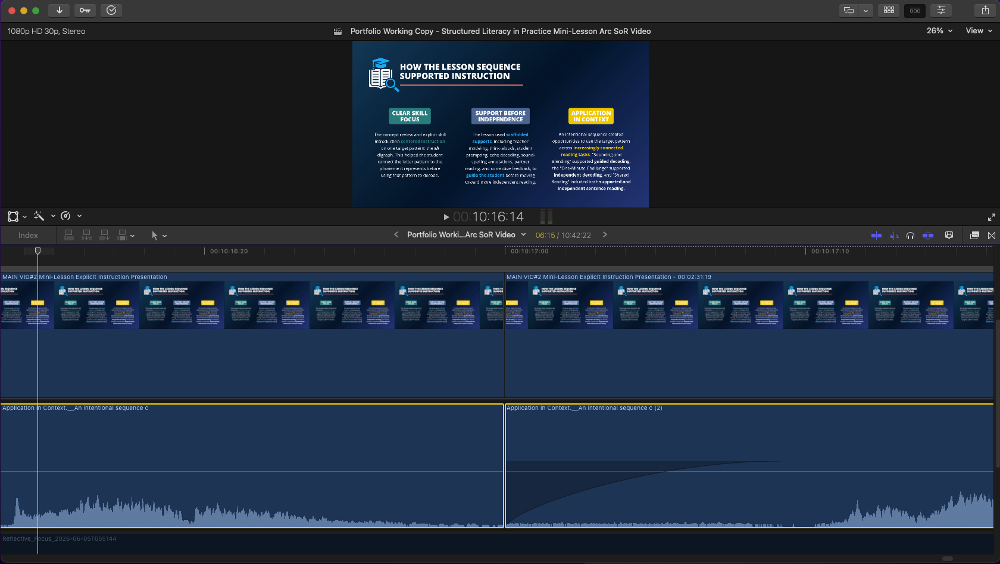

1. Source Generation
Original source audio before pacing refinement, with its internal timing, extended pauses, and breath lengths left as generated.
Open source audio fileA focused example of pacing refinement, breath editing, and alternate-generation assembly within an ElevenLabs narration workflow.
“An intentional sequence created opportunities to use the target pattern across increasingly connected reading tasks. ‘Sounding and Blending’ supported guided decoding, the ‘One-Minute Challenge’ supported independent decoding, and ‘Shared Reading’ included both supported and independent sentence reading.”
The source generation was strong overall, but several extended pauses made the delivery feel drawn out and more segmented than intended. An alternate generation also provided a stronger ending.
Note: For this comparison, the opening of the source excerpt was trimmed to match the starting point of the final passage. The source excerpt also received the same uniform +3 dB gain adjustment used on the completed passage. Its internal timing, pauses, and breaths were otherwise left unchanged.
Original source audio before pacing refinement, with its internal timing, extended pauses, and breath lengths left as generated.
Open source audio fileCompleted four-segment edit with tightened pauses, shaped breath transitions, and a stronger ending selected from an alternate generation.
Open final audio fileThe completed passage was assembled from four narration segments, outlined in yellow on the timeline. Edits 1 and 2 refined the pauses after “reading tasks” and “guided decoding”; Edit 3 introduced the stronger ending from an alternate generation.

The close-up below shows Edit 3, where the narration transitions into the alternate-generation ending. The outgoing breath was shortened but left unfaded. The incoming breath was positioned to join it naturally and given a short fade-in so the two performances formed one cohesive breath transition.

The revised timing kept the explanation from feeling drawn out, while the edited breath transitions maintained natural continuity and prevented the comped narration from sounding mechanically cut together. The completed edit reduced the passage from 17.43 seconds to 15.10 seconds while preserving the same spoken content.
This passage is one example of an editing approach used routinely throughout the project when a generated take was otherwise effective but required timing, breath, or continuity adjustments to fit the instructional flow of the finished video.